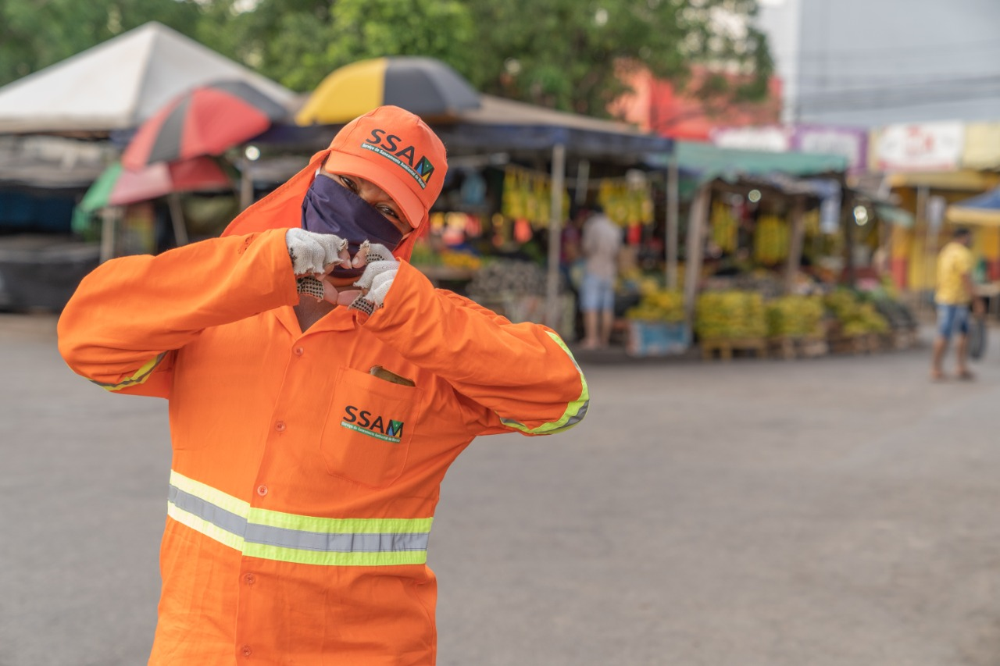

Profissão de gari. Importância, atividades e formação
Perguntas e respostas sobre o profissional gari e qual a importância do gari na sociedade. Quais atividades são desempenhadas, formação, como ser contratado e outras informações a respeito do gari.
Um Gari trabalha com a limpeza das vias públicas. Ele é responsável por varrer diariamente ruas, praças, parques, dentre outros locais públicos. Ele trabalha para que as cidades estejam diariamente limpas e em boas condições de habitação. Isso faz com que este profissional seja essencial no ambiente urbano.
Segundo dados do IBGE (Instituto Brasileiro de Geografia e Estatística), nós, brasileiros, produzimos aproximadamente 230 mil toneladas de lixo por dia. Com esse número alarmante é possível entender que precisamos muito do trabalho dos Garis. Mesmo contando com as coletas de lixo, uma parcela do que é produzido acaba indo para as vias públicas e o Gari tem o importante papel de deixar tudo organizado. A limpeza diária diminui, também, os riscos de bueiros entupidos ocasionando enchentes.

Quanto ganha em média?
Mesmo sendo uma profissão de suma importância para todos, ainda não é muito bem remunerada. As médias das grandes capitais do país não pagam mais do que R$1.100,00.
tipo de profissional não precisa de muitas especificações para o cargo, porém empresas terceirizadas costumam buscar esses serviços e podem optar pela contratação de alguém que já esteja no ramo. Neste caso, algum grau de escolaridade será um diferencial na hora da escolha.
Atualmente a maioria das empresas contratantes pede que o profissional tenha o ensino médio, porém algumas ainda contratam apenas com o fundamental.
A profissão é valorizada?
Mesmo sabendo o quanto os Garis são importantes na vida urbana, não são valorizados profissionalmente. Com salários baixos, correndo riscos expostos nas ruas todos os dias e percorrendo trajetos longos, esses profissionais, de fato, se esforçam bastante para fazer o seu ofício todos os dias.
As atividades que este profissional desenvolve são varrer e recolher dejetos jogados em calçadas, ruas, praças e locais públicos. Com suas rotas já predeterminadas e diariamente.
Infelizmente vemos que a profissão não é valorizada, mesmo sabendo que sem estes profissionais viveríamos em uma cidade suja e descuidada, podemos perceber já no salário, como já dito anteriormente, que eles não recebem tanto quanto merecem pela quantidade de trabalho. Muitas pessoas ainda tem preconceito para com eles, os ignoram, sentem nojo. Não é uma condição generalizada, mas sabemos que infelizmente existe.
Quais características são importantes para quem quer ser um Gari?
Por ser uma profissão de movimentação diária, é preciso ser uma pessoa ágil, dinâmica, dedicada, focada, resiliente (que consegue trabalhar sob pressão), motivada e disposta a oferecer seus serviços à sociedade.
Para se tornar um gari o profissional deve ter grande força de vontade para trabalhar em prol do bem da sociedade, melhorando o seu crescimento e é claro, a sua higienização.
Tais características também são de grande diferencial para esse profissional: disposição física e mental, pró-atividade, positividade em servir o público, flexibilidade, agilidade, responsabilidade e trabalho em equipe.
Não podemos esquecer que cada vez mais um grau de escolaridade maior vem sendo cobrado, então, quanto mais puder estudar melhor.
Como ser contratado?
Como já vimos acima, o profissional gari atua varrendo as vias públicas da cidade, assim como recolhendo dejetos jogados nas ruas. A tarefa tem como objetivo realizar uma limpeza digna e de qualidade para o espaço em questão.
Para trabalhar nesta área é necessário observar que esta atividade é de competência da prefeitura e em algumas cidades a própria prefeitura é que contrata, já em outras onde a limpeza urbana é terceirizada, cabe a empresa responsável fazer a contratação.
Se a prefeitura for contratar, isto pode acontecer de duas formas: por contrato temporário de trabalho ou concurso público. Já no caso de empresa terceirizada é contrato pelo regime CLT.
Diante disso é necessário verificar na sua cidade como é feito a limpeza pública. Em caso de dúvidas, basta procurar a prefeitura local e se informar.
Sobre Nós: Celebrando a Dedicação dos Profissionais da Limpeza
Nós, como grupo organizador desta iniciativa inovadora, somos apaixonados por criar impacto social e promover mudanças significativas na percepção das profissões muitas vezes negligenciadas pela sociedade. Composto por estudantes dedicados de diversas áreas, nossa equipe está unida pelo compromisso de valorizar e reconhecer a importância dos garis, verdadeiros heróis urbanos que desempenham um papel vital na manutenção da higiene e saúde pública. Nosso engajamento nesse projeto não se limita à realização da feira de profissões; é um reflexo do nosso desejo coletivo de gerar conscientização, respeito e valorização para com todas as ocupações que contribuem para o bem-estar da nossa comunidade.

Depoimentos0
"Ser gari vai muito além de limpar as ruas. Somos guardiões da cidade, zelamos pelo bem-estar de todos. Cada rua varrida, cada saco de lixo recolhido é um ato de cuidado e responsabilidade. Apesar de muitas vezes ser uma profissão invisível aos olhos da sociedade, o que fazemos é essencial para manter a cidade limpa e segura. É um orgulho contribuir para um ambiente mais saudável e ver o reconhecimento das pessoas pelo nosso trabalho seria o maior incentivo para qualquer um seguir essa profissão com ainda mais dedicação."
"O trabalho de gari é muito mais do que recolher lixo. É um serviço que requer coragem, determinação e respeito. Muitas vezes somos estigmatizados, mas a verdade é que somos parte fundamental da comunidade. Conheço cada canto desta cidade e me sinto responsável por mantê-la limpa. A valorização do nosso trabalho não apenas elevaria a autoestima da categoria, mas também traria um reconhecimento necessário para que possamos ser vistos como profissionais que merecem respeito e admiração pelo que fazem."
section 4